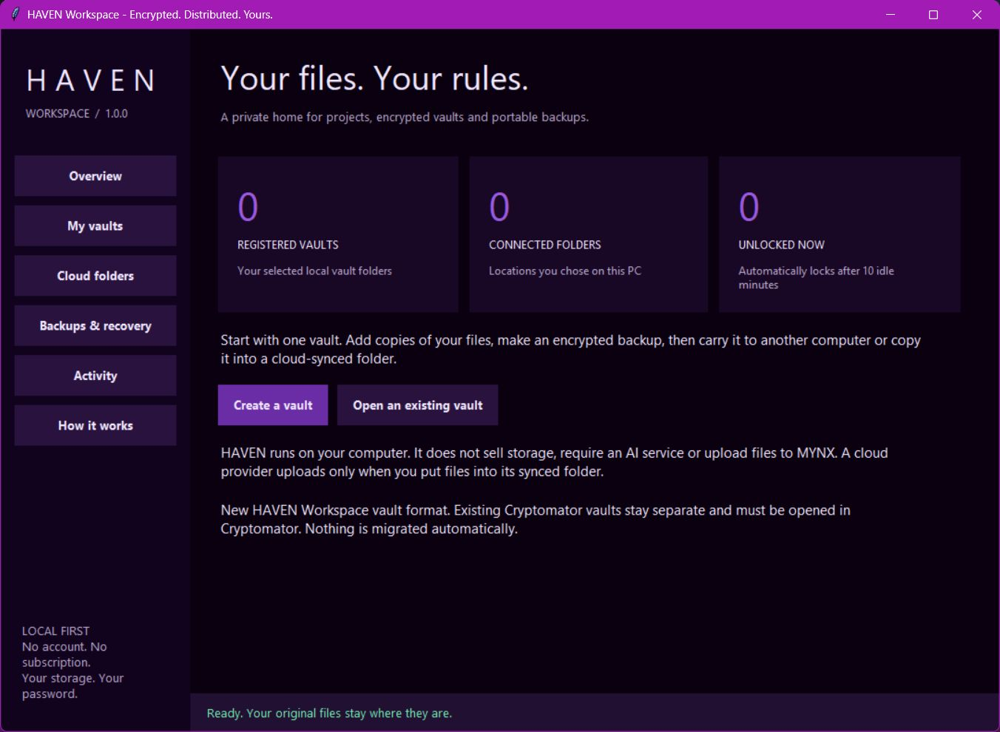

A private home for the files you make. Encrypt copies of your projects, verify them, and carry a backup to your next Windows computer.
One payment. Your own computers. No recurring HAVEN fee.

A desktop at home. A laptop on the move. A portable drive and cloud folders in between. HAVEN gives you a deliberate way to protect and carry the work without handing a service the keys.
Explore the steps below. This walkthrough explains the workflow; file protection happens in the Windows app.
Choose a vault folder and a password you keep. There is no MYNX account or password-reset service. Store the password separately from your only backup.
Save an encrypted HAVEN backup in a folder already synced by your cloud provider. The provider handles the upload. HAVEN checks the local folder and tells you when the backup file is saved.
Protect the projects. Keep the edition.
Windows 10/11 x64; ARM64 uses x64 emulation. Cloud accounts and storage are separate. Future major editions and unlimited personal support are not included.
This is the recreated HAVEN Workspace release, built from the original multi-vault and multi-computer workflow. It performs encryption, file verification and backup operations locally. The original display dashboard and historical files are preserved separately.
No storage is included. HAVEN does not merge cloud quotas, log into provider accounts, mount a drive or run provider-to-provider transfers. Your existing cloud client uploads the encrypted backup you save in its folder. Confirm upload completion there.
No. HAVEN Workspace uses its own HAVEN-WORKSPACE-1 format. Open existing Cryptomator vaults in Cryptomator. There is no automatic migration or change to those files.
HAVEN has no password reset or MYNX-held key. Keep the vault password safely and separately from your only backup. Make a test backup, restore it and verify you can export your files before relying on the workflow.
Vault file contents and the catalog, including filenames, use authenticated encryption through the cryptography library (AES-256-GCM, with a password key derived using scrypt). Encrypted sizes and object counts remain visible. Originals and readable exported copies remain outside vault protection. Functional checks passed; the application has not received an independent security audit.
No. The package includes its runtime. Extract it and open OPEN_HAVEN.bat. There is no recurring HAVEN fee. Your cloud provider may charge for its own storage or services.
Contact halehigherlearning@outlook.com with your Windows version and visible error. Never send a password, recovery key or private vault files. The package was tested on the configured Windows laptop and in a fresh extraction; this does not establish compatibility with every PC or cloud client.